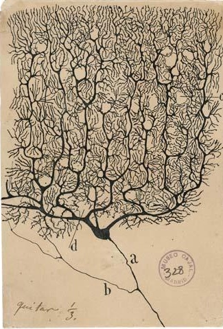
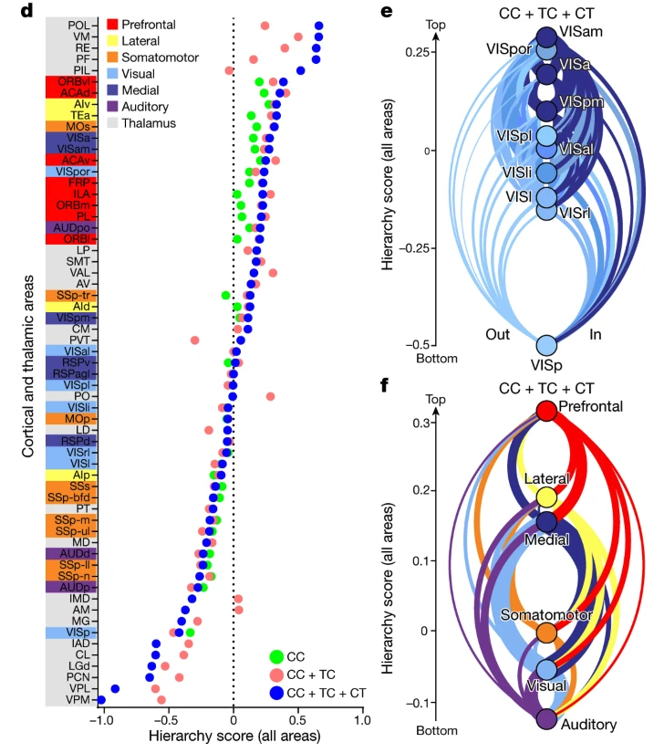

Computational Neuroscience
Neural data - action potentials and voltage and using the time domain, fourier domain
theoretical models and data-driven analyses


_
Voltage
Membrane proteins (and lipid properties) give neurons some features of electronic circuits.
_
Voltage
Membrane proteins (and lipid properties) give neurons some features of electronic circuits.
Understanding these proteins (and lipids) shares computational approaches as many areas of bioscience - namely, protein structure.
- Alphafold, large protein models
_
Voltage : Action potentials
Hodgkin-Huxley experiments
_
Voltage : Action potentials
Hodgkin-Huxley equivalent circuit and equation

Code
import sys
import os
if not os.path.exists("./src/pyhh/__init__.py"):
raise Exception("script must be run in project root folder")
sys.path.append("./src")
import numpy as np
import matplotlib.pyplot as plt
import pyhh
# customize a neuron model if desired
model = pyhh.HHModel()
model.gNa = 100 # typically 120
model.gK = 5 # typically 36
model.EK = -35 # typically -12
# customize a stimulus waveform
stim = np.zeros(20000)
stim[7000:13000] = 50 # add a square pulse
# simulate the model cell using the custom waveform
sim = pyhh.Simulation(model)
sim.Run(stimulusWaveform=stim, stepSizeMs=0.01)
# plot the results with MatPlotLib
ax1 = plt.subplot(1,1,1)
ax1.plot(sim.times, sim.Vm - 70, color='b')
ax1.set_ylabel("Potential (mV)")
ax1.set_title("Hodgkin-Huxley Spiking Neuron Model")
ax4 = plt.subplot(2,1,1, sharex=ax1)
ax4.plot(sim.times, sim.INa, label='VGSC')
ax4.plot(sim.times, sim.IK, label='VGKC')
ax4.plot(sim.times, sim.IKleak, label='KLeak')
ax4.set_ylabel("Current (µA/cm²)")
ax4.set_xlabel("Simulation Time (milliseconds)")
ax4.legend()
plt.tight_layout()
plt.show()simulating 20000 time points...
simulation complete
_
Voltage : Action potentials
testing Hodgkin-Huxley predictions for ioinc conductances
_
Neurons : Synaptic transmission
_
Neurons : Synaptic connectivity
Ramon y Cajal 
How do we measure connectivity? …voltage!
_
Neurons : Synaptic connectivity
Connectivity
Connectivity
Connectivity

Behavior
- modeling muscles: Mazen al Borno, CPBS 7712, March 11th
- analyzing movements: CPBS 7712, March 6th
Time domain
Analyses
Time domain
compare heirarchy from harris to jia/siegle
Fourier

-
- Neurons + Neural Systems
- what are we computing about?
- Time Domain Methods
- Frequency Domain Methods